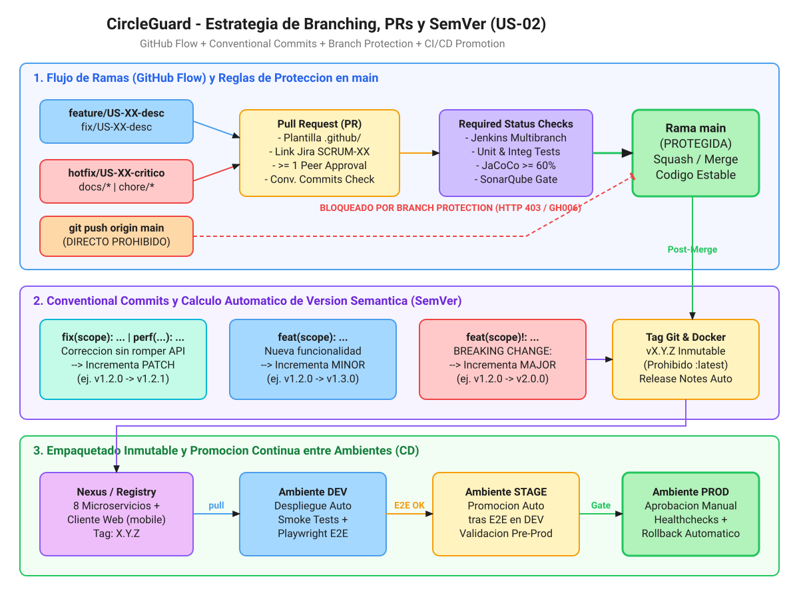
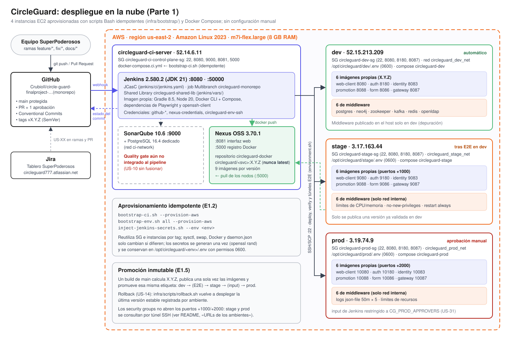
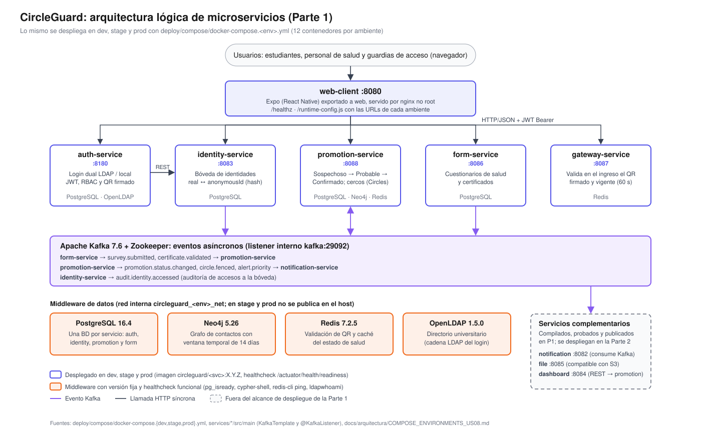
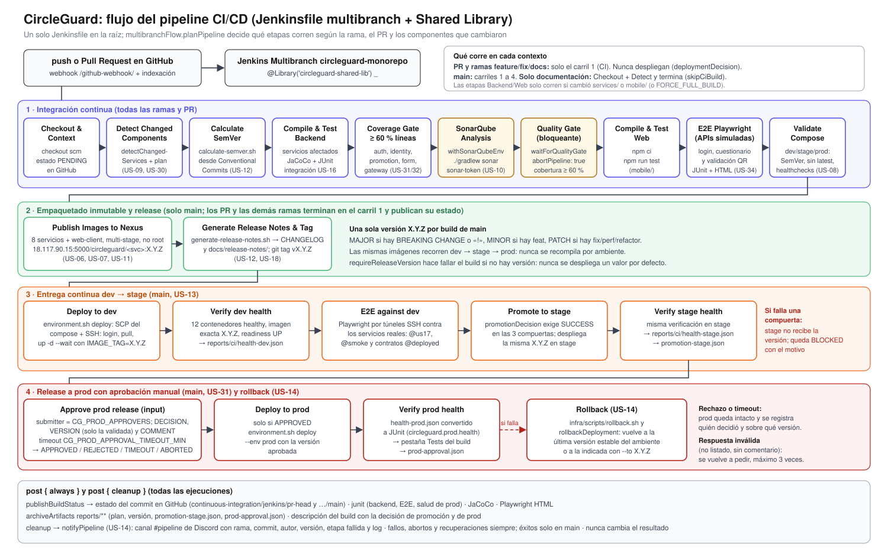

CircleGuard: pipeline DevOps de extremo a extremo
| Equipo | SuperPoderosos: Juan Camilo Rubio Arboleda, Esteban Cuéllar, Santiago Castillo y Juan Pablo Ordóñez |
|---|---|
| Códigos | A00401838 · A00402548 · A00395559 · A00378093 |
| Repositorio | github.com/CrubioII/circle-guard-finalproject-A00401838-A00402548-A00395559-A00378093 |
| Tablero ágil (Jira) | Proyecto SuperPoderosos (clave SCRUM) en circleguard777.atlassian.net |
| Jenkins (pipeline) | http://52.14.6.11:8080/job/circleguard-monorepo/ |
| Nexus / registro | http://52.14.6.11:8081/ · 52.14.6.11:5000 |
| SonarQube | http://52.14.6.11:9000/ |
| Ambientes | dev 52.15.213.209 · stage 3.17.163.44 · prod 3.19.74.9 (puertos en la sección 1) |
| Uso de IA generativa | Nivel 3: Colaboración con IAG. Anexo en IAG_REGISTRO.md y resumen en el anexo B |
| Fecha de corte de la evidencia | 10 de noviembre de 2026 |
Contenido
- Enlaces, ambientes y estado por entregable
- E1.1 Gestión ágil y branching
- E1.2 Infraestructura en la nube con Bash
- E1.3 Empaquetamiento inmutable
- E1.4 Pipeline Jenkins (CI)
- E1.5 Entrega continua y promoción
- E1.6 Pruebas automatizadas
- E1.7 Change management y release notes
- E1.8 Documentación
- Brechas y plan de acción
- Anexo A: resultados de las validaciones · Anexo B: resumen de IAG · Anexo C: lista de capturas
1. Enlaces, ambientes y estado por entregable
1.1 URLs de los ambientes y herramientas
| Componente | URL o host | Healthcheck |
|---|---|---|
| Jenkins 2.580.2 | http://52.14.6.11:8080/ | GET /login → 200 |
| SonarQube 10.6 | http://52.14.6.11:9000/ | GET /api/system/status |
| Nexus 3.70.1 y registro Docker | http://52.14.6.11:8081/ · 52.14.6.11:5000 | GET /service/rest/v1/status → 200 |
| dev | web :8080 · auth :8180 · identity :8083 · promotion :8088 · form :8086 · gateway :8087 | /healthz y /actuator/health/readiness |
| stage | 3.17.163.44: web 9080 · auth 9180 · identity 9083 · promotion 9088 · form 9086 · gateway 9087 | igual; acceso por túnel SSH |
| prod | 3.19.74.9: web 10080 · auth 10180 · identity 10083 · promotion 10088 · form 10086 · gateway 10087 | igual; acceso por túnel SSH |
Los security groups de los ambientes abren solo 22, 8080, 8180 y 8087. Stage y prod se consultan con ssh -L, como indica el README (sección «URLs de los ambientes»). Las instancias se apagan fuera de las ventanas de evaluación.
1.2 Estado por entregable
| Cód. | Entregable | Estado | Evidencia principal |
|---|---|---|---|
| E1.1 | Gestión ágil y branching | Parcial | Tablero Jira con historias y criterios de aceptación; estrategia GitHub Flow y Conventional Commits; PR revisados. Falta versionar la planeación, la review y la retrospectiva de los sprints 0 y 1 |
| E1.2 | Infraestructura en la nube con Bash | Cumplido | 4 EC2, bootstrap-ci.sh y bootstrap-env.sh idempotentes (39 y 38 pruebas), Docker Compose y secretos externalizados |
| E1.3 | Empaquetamiento inmutable | Cumplido | Dockerfile multi-stage sin root para 8 servicios y para el web; imágenes 0.1.0 a 0.2.0 en Nexus; compose por ambiente con healthchecks (53 verificaciones) |
| E1.4 | Pipeline Jenkins (CI) | Parcial | Multibranch con webhook, Shared Library, ejecución selectiva, JaCoCo, publicación y build #18 de main en verde. Falta la etapa SonarQube con quality gate bloqueante (US-10) |
| E1.5 | Entrega continua y promoción | Parcial | Build #18 de main: SemVer 0.2.0, despliegue a dev, E2E contra dev y promoción a stage en verde. Aprobación manual a prod implementada y validada (casos 20 a 22). Notificaciones en Discord (US-14) en ejecución. Rollback con pruebas. Falta configurar los aprobadores de prod, empujar el tag a GitHub y la etapa de rollback en el pipeline |
| E1.6 | Pruebas automatizadas | Parcial | 236 pruebas en el build #18 (0 fallos), 94 % de líneas en el agregado y ≥ 60 % en los 5 servicios núcleo, 3 flujos E2E Playwright corridos contra dev y 3 integraciones con Testcontainers. Falta una integración entre servicios |
| E1.7 | Change management y release notes | Cumplido | Plantilla de RFC, política por tipo de cambio, release notes y CHANGELOG automáticos, tags vX.Y.Z |
| E1.8 | Documentación | Cumplido | README operativo, diagramas de arquitectura y del pipeline, anexo IAG y este informe |
htmlpublisher instalado. El build #18 de main (commit ab2aa2a, que incluye US-13, US-14, US-17 y US-31) terminó en SUCCESS: publicó 0.2.0, la desplegó en dev y en stage y avisó en Discord. Los builds #15 a #17 fallaron en Deploy to dev y la compuerta bloqueó la promoción, como se espera. Siguen abiertos dos riesgos: Jenkins no tiene autenticación y CG_PROD_APPROVERS está vacía, así que el release a prod se omitió (NOT_CONFIGURED).2. E1.1 Gestión ágil y branching
El backlog está en Jira (proyecto SuperPoderosos, circleguard777), con épicas por entregable: EPIC-01 a EPIC-05. Cada historia tiene ficha de valoración, criterios de aceptación medibles y subtareas en puntos de historia. La estrategia es GitHub Flow orientado a trunk-based, con promoción inmutable entre ambientes:
maines la única rama de integración y está protegida: no admite push directo y exige un PR con 1 aprobación y el estado de Jenkins.- El trabajo se hace en ramas
feature/US-XX-*,fix/*,hotfix/*ydocs/*. - Los commits siguen Conventional Commits, validados con la expresión regular de
BRANCHING_STRATEGY.md.

main, SemVer y promoción (docs/agil/diagramas/branching-strategy-flow.svg).main.Trazabilidad: al corte, todo cambio entró a main por Pull Request, hasta el #24. Cada PR referencia su historia en el nombre de la rama, en el título y en la plantilla (.github/pull_request_template.md). Lo fusionó un integrante distinto del autor. Documento: docs/agil/BRANCHING_STRATEGY.md.
3. E1.2 Infraestructura en la nube con Bash

| Rol | Instancia | IP | Script |
|---|---|---|---|
| Jenkins, SonarQube y Nexus | i-0f933271f06cf571d (m7i-flex.large) | 52.14.6.11 | bootstrap-ci.sh --provision-aws |
| dev | i-0afac282e0fa495ce | 52.15.213.209 | bootstrap-env.sh all --provision-aws |
| stage | i-0856938aef6905ddc | 3.17.163.44 | |
| prod | i-087a647cdd67fb57a | 3.19.74.9 |
Idempotencia. Los scripts reutilizan los security groups y las instancias por tag, y comparan antes de escribir: sysctl, limits, swap, /etc/fstab y daemon.json. No sobrescriben .env.ci ni /opt/circleguard/<env>/.env (0600), y reconcilian los contenedores con docker compose up -d. Las suites test-bootstrap-ci-idempotency.sh (39 pruebas) y test-bootstrap-env-idempotency.sh (38 pruebas) ejecutan los scripts dos veces y verifican que la segunda corrida no cambie nada.
Extracto de bash infra/bootstrap/test-bootstrap-env-idempotency.sh, ejecutado el 9 de noviembre de 2026 (38 pruebas, 0 fallidas):
[3/4] Validando CA3 e idempotencia en los 3 ambientes (dev, stage, prod)... [PASS] [dev] Ejecución #1 crea directorio aislado y archivo .env [PASS] [dev] Define red aislada circleguard_dev_net [PASS] [dev] Define base de datos aislada circleguard_dev [PASS] [dev] Ejecución #2 detecta sysctl ya actualizado [PASS] [dev] Ejecución #2 preserva secretos generados sin sobrescribirlos [PASS] [stage] Ejecución #2 preserva secretos generados sin sobrescribirlos [PASS] [prod] Ejecución #2 preserva secretos generados sin sobrescribirlos [PASS] Secretos JWT son únicos y aislados entre dev y stage [PASS] Secretos JWT son únicos y aislados entre stage y prod [PASS] Inyección desde Jenkins actualiza POSTGRES_PASSWORD en prod/.env [PASS] Rechaza correctamente un ambiente inválido con código != 0
El registro de la segunda ejecución sobre AWS, con las líneas «ya existe; reutilizando de forma idempotente», está en docs/arquitectura/BOOTSTRAP_CI_US04.md §4. Documentos: BOOTSTRAP_CI_US04.md y BOOTSTRAP_ENV_US05.md.
4. E1.3 Empaquetamiento inmutable
- Dockerfile multi-stage por microservicio: compilación con Gradle y ejecución sobre JRE, con usuario no root (US-06). El cliente web también es multi-stage:
expo exporty luego nginx sin root con/runtime-config.jsgenerado al arrancar (US-07). - Versión semántica en cada imagen:
52.14.6.11:5000/circleguard/<svc>:X.Y.Z. Ni los scripts ni los compose aceptanlatest, ypipelineUtilsbloquea:latest. - Un compose por ambiente (
deploy/compose/docker-compose.{dev,stage,prod}.yml) con 12 contenedores, healthchecks funcionales ydepends_on: service_healthy.validate-compose.shpasa 53 verificaciones.
circleguard-docker.auth-service (0.1.0, 0.1.1, 0.1.2 y 0.2.0).
5. E1.4 Pipeline Jenkins (CI)

- Multibranch y webhook. El job
circleguard-monorepose declara con JCasC y descubre 20 ramas y 16 PR. El webhook/github-webhook/lo registrasetup-github-webhook.sh, y el estado se publica en GitHub. - Shared Library.
jenkins/vars/incluyedetectChangedServices,multibranchFlow,pipelineUtils,publishBuildStatus,rollbackDeploymentynotifyPipeline, con validadores de 6, 22 y 8 casos. - Ejecución por servicio. Solo se compilan y prueban los servicios modificados. Un cambio compartido o
FORCE_FULL_BUILDconstruye los 8. - Etapas: checkout, Gradle, pruebas unitarias con JaCoCo y compuerta de cobertura ≥ 60 %, pruebas de integración (Testcontainers dentro de
test), E2E, empaquetado y publicación. - Brecha El análisis SonarQube con quality gate bloqueante no está en
main. El servidor y el pluginsonarexisten, pero la rama de US-10 no se fusionó.
main: tendencia de pruebas y Stage View.main (SUCCESS).6. E1.5 Entrega continua y promoción
| Capacidad | Implementación | Estado |
|---|---|---|
| Versionado semántico automático y tag | calculate-semver.sh (Conventional Commits) y git-tag-release.sh | En ejecución build #18 → 0.2.0; el tag v0.2.0 se crea en el workspace de Jenkins pero no se empuja a GitHub |
| Despliegue automático a dev | Deploy to dev y Verify dev health (US-13) | En ejecución build #18: 12 contenedores sanos en dev |
| Promoción a stage tras E2E | E2E against dev, promotionDecision y Promote to stage | En ejecución build #18: E2E contra dev en verde y 0.2.0 PROMOTED a stage |
| Aprobación manual a prod | input restringido a CG_PROD_APPROVERS, con versión y comentario (US-31) | Validado casos 20 a 22 y en un Jenkins 2.580.2 real. En el build #18 se omitió (NOT_CONFIGURED) porque no hay aprobadores |
| Rollback básico | infra/scripts/rollback.sh y rollbackDeployment (US-14) | Probado 10 casos; falta la etapa en el Jenkinsfile |
| Notificaciones del pipeline | notifyPipeline en post { cleanup }: canal #pipeline de Discord con rama, commit, autor, versión, etapa fallida y enlace al log (US-14) | En ejecución build #18 → «RECUPERADO» (HTTP 204); 8 casos de validación |
main.#pipeline de Discord.Las decisiones quedan registradas en reports/ci/promotion-stage.json (PROMOTED o BLOCKED, con el motivo) y en reports/ci/prod-approval.json (quién aprobó o rechazó, la versión y el comentario). Documentos: DEPLOY_PROMOTION_US13.md, PROD_APPROVAL_US31.md, ROLLBACK_US14.md y NOTIFICACIONES_US14.md.
7. E1.6 Pruebas automatizadas
| Nivel | Qué hay | Evidencia |
|---|---|---|
| Unitarias y cobertura | Pruebas en los 8 servicios. Compuerta jacocoTestCoverageVerification ≥ 60 % de líneas en auth, identity, promotion, form y gateway | Build #18: 236 pruebas, 0 fallos y 3 omitidas; JaCoCo con 94 % de líneas en el agregado |
| Integración (Testcontainers) | LocalUserRepositoryPostgresIntegrationTest (auth↔PostgreSQL), IdentityMappingRepositoryPostgresIntegrationTest (identity↔PostgreSQL) y QrValidationRedisIntegrationTest (gateway↔Redis) | Se ejecutan dentro de test cuando hay Docker. Falta una que cruce servicios, como form → Kafka → promotion |
| E2E (Playwright) | Flujos de login, cuestionario de salud y validación de acceso con QR, más smoke. Contra dev: contratos @deployed | Build #18: los flujos flows_*, smoke y los contratos deployed_* corrieron contra dev y pasaron (pestaña Tests) |
main al corte.8. E1.7 Change management y release notes
- Plantilla de solicitud de cambio:
docs/release-notes/PLANTILLA_RFC.mdy.github/ISSUE_TEMPLATE/change_request.md. - Política de aprobación por tipo de cambio (estándar, normal y emergencia), con su matriz de responsables:
POLITICA_GESTION_CAMBIOS.md. Los cambios normales y de emergencia exigen la aprobación manual de Jenkins para prod, que US-31 implementa con comentario o RFC obligatorio. - Release notes automáticas desde commits y PR:
generate-release-notes.shgeneraCHANGELOG.mdydocs/release-notes/RELEASE_NOTES_vX.Y.Z.md, agrupadas por tipo de Conventional Commit y con la lista de imágenes del release. - Etiquetado:
vX.Y.Zen Git (git-tag-release.sh) yX.Y.Zen las imágenes. MAJOR, MINOR o PATCH segúnBREAKING CHANGE/!,featofix/perf/refactor.
9. E1.8 Documentación
- README operativo (
README.md): estructura del repositorio, URLs de ambientes y herramientas, matriz de puertos, reproducción paso a paso (bootstrap de CI y ambientes, configuración de Jenkins y primera ejecución), operación del pipeline, aprobación, rollback, pruebas e índice de documentos. - Diagramas en
docs/arquitectura/: arquitectura de microservicios y de despliegue en la nube (ARQUITECTURA_P1.md) y flujo del pipeline (PIPELINE_CICD.md). Son SVG versionados, editables como texto y renderizados por GitHub. - Bitácora de IAG (
IAG_REGISTRO.md): declaración de Nivel 3, prompts con su contenido propio y la verificación hecha, y reflexión crítica. - Este informe:
docs/informe/informe-parte1.html, compilado a PDF connode docs/informe/scripts/build-pdf.mjs. Las capturas de Jenkins y Nexus se regeneran concapture-evidence.mjs.
10. Brechas y plan de acción
| Brecha | Acción | Entregable |
|---|---|---|
| Espacio en disco del servidor de CI (ya se llenó una vez) | Limpieza periódica (docker builder prune por cron, cleanWs(), tarea cleanup de Nexus) o ampliar el volumen EBS | E1.2, E1.4 |
| Jenkins sin autenticación | Declarar securityRealm y authorizationStrategy (matrix-auth) en JCasC y definir CG_PROD_APPROVERS | E1.2, E1.5 |
| SonarQube con quality gate bloqueante | Fusionar US-10: withSonarQubeEnv y waitForQualityGate abortPipeline: true | E1.4 |
| Tag de release en GitHub | git push origin vX.Y.Z desde git-tag-release.sh con la credencial github-credentials | E1.5, E1.7 |
| Rollback desde el pipeline | Etapa Rollback con ROLLBACK_TARGET_VERSION (US-14 §3.2) | E1.5 |
| Integración entre servicios | Prueba form → Kafka → promotion con Testcontainers (Kafka y PostgreSQL) | E1.6 |
| Sprints 0 y 1 documentados | Agregar planeación, review y retrospectiva en docs/agil/ y las capturas de Jira | E1.1 |
Anexo A. Resultados de las validaciones (10 de noviembre de 2026)
Se ejecutaron en una estación del equipo (Windows 11 con Git Bash) sobre la rama de US-19. Cualquier integrante o el docente puede repetirlas con los comandos del README, sección 7.
| Comando | Resultado |
|---|---|
./gradlew validateJenkinsSharedLibrary | 6/6 casos OK |
./gradlew validateJenkinsMultibranchPipeline | 22/22 casos OK (plan, compuertas, promoción y aprobación de prod) |
./gradlew validateJenkinsNotifications | 8/8 casos OK (mensaje, política, recuperación, errores de Discord, dry-run y firmas CPS) |
bash deploy/compose/validate-compose.sh | 53 verificaciones OK en dev, stage y prod |
bash deploy/scripts/test-deploy-scripts.sh | 40 pruebas OK |
bash infra/bootstrap/test-bootstrap-ci-idempotency.sh | 39 pruebas OK, 0 fallidas |
bash infra/bootstrap/test-bootstrap-env-idempotency.sh | 38 pruebas OK, 0 fallidas |
bash infra/scripts/test-calculate-semver.sh | 5/5 casos OK |
bash infra/scripts/test-rollback.sh | 10/10 casos OK |
Jenkins real, build #18 de main (ab2aa2a, 6 min 5 s): SUCCESS. SemVer 0.2.0, 236 pruebas, JaCoCo 94 %, publicación de las 9 imágenes en Nexus, despliegue y healthchecks en dev, E2E contra dev, promoción y healthchecks en stage (PROMOTED), prod omitido (NOT_CONFIGURED) y notificación en Discord (HTTP 204). Las imágenes 0.1.0, 0.1.1, 0.1.2 y 0.2.0 están en circleguard-docker (consultado por la API de Nexus).
Anexo B. Resumen del uso de IA generativa
El equipo declara Nivel 3: Colaboración con IAG. El anexo completo es IAG_REGISTRO.md, en la raíz del repositorio. Contiene:
- La declaración y las reglas de uso: nunca compartimos secretos, y cada commit, push y PR lo hace un integrante.
- El registro de prompts por historia (US-08, US-13, US-14, US-19, US-31 y US-33), con el contenido propio entregado a la IA, el prompt, el resultado y la verificación.
- La reflexión crítica. Ejemplos: una restricción de aprobación que no protegía contra administradores y que solo apareció al probar en un Jenkins real, las limitaciones del sandbox, un análisis hecho sobre un estado desactualizado, y la decisión de declarar las brechas en lugar de ocultarlas.
Anexo C. Lista de capturas
Las capturas sin sesión las genera node docs/informe/scripts/capture-evidence.mjs. Las que requieren sesión (Jira, GitHub, AWS, SonarQube) se guardan a mano en docs/informe/capturas/ con el nombre indicado. Después se recompila el PDF. Detalle: docs/informe/capturas/README.md.
| Archivo | Figura | Estado |
|---|